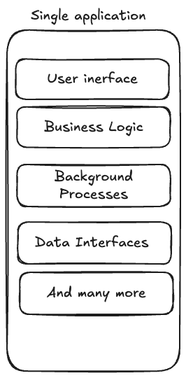

When you start creating any application, you should not make it difficult. You need to make it work right now, so you start writing code put everything into one application.
Bravo !
You have just created a Monolithic Architecture.
How?
Well, before going deeper into monolith let's define what is it ?

The most basic and strict characteristics of a monolith architecture may be squeezed down to the following points - Single executable program - Single instance - One database (we talk about one database of each type) - Unified Build and Deployment - Communication within application
Is it a good or a bad approach?
This question is not right. Each approach has its own pros and cons, so let's list them
Undoubtedly, it is easy to create a couple of classes with an array of functions in each that complete some uncomplicated operations. |
If the error is not a simple one like “line 147 pages.py method length() is not callable”, but anything more complicated, it is almost impossible to find the right place, where error occurred. Moreover, when a program does not fail, but just gives wrong results, you may face a vast array of difficulties trying to figure out part of the system, where it started to fail as everything is messed up and tightly coupled |
As a monolithic application is to be redeployed wholly, when one part fails or a new release is coming out, such a routine may drive a lot of people mad, and at the same time it has a severe effect on developing and down time |
|
As the system is tightly coupled, hardly can anyone argue that one part can be changed while the other is not finished, which makes projects/products that are based on this architecture design very slow and not let them use agile methodologies |
Moreover, when we talk about architecture and programming, it is vital to get into understanding two following things
Why?
Because usually bad monoliths are ones that have low cohesion, which led at some moment to appearing of new architecture styles that we will discuss in the following parts.
For now we will stop here, however, later in more detailed version (so, when I have time), we will dive deeper into monolith and its types